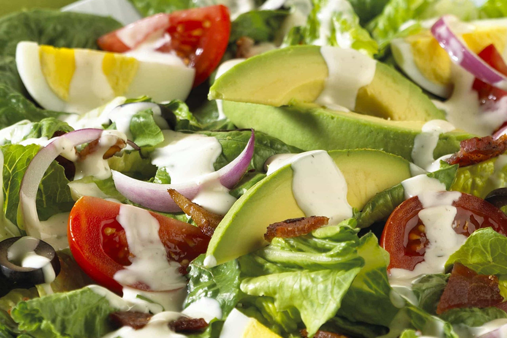

The Perfect Salad

The Surprisingly Perfect Salad
Ingredients:
- Sliced Black Olives ½ cup
- Medium Red Onion Peeled, Sliced ½
- Large Avocado Peeled, Sliced 1
- Hard-Cooked Eggs Cut In Wedges 4
- Large Tomatoes Stems Removed, Cut In Wedges 2
- Cooked Bacon Bits 4 tablespoons
- Torn Romaine Lettuce 6 cups
- Hidden Valley® Original Ranch® Light Dressing ¾ cup
Steps:
- In a large bowl, combine all the ingredients together with the dressing and toss
until well coated. Serve immediately garnished with the olives.